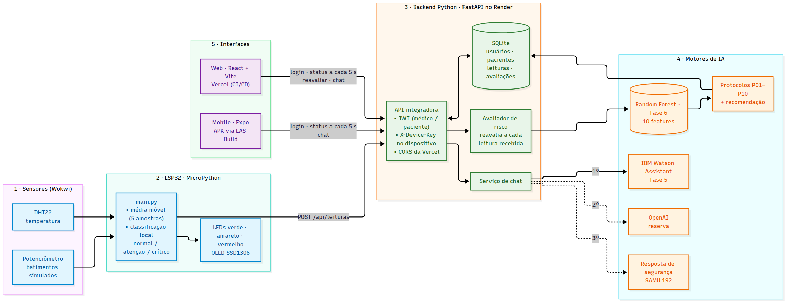

Coração Sob Controle: plataforma integrada de previsão de crises com IA
| Entregável | Endereço |
|---|---|
| Aplicação Web (Vercel) | https://tiao-2026.vercel.app |
| APK Android (EAS Build) | expo.dev/accounts/microdri/projects/cardioia/builds/182ecc37-8deb-4059-8612-1fac1bcf6171 |
| API integradora (Render) | https://cardioia-backend-phkq.onrender.com |
| Simulação Wokwi | link público do projeto (a adicionar) |
| Vídeo demonstrativo | https://youtu.be/OtVBNq8AOJ8 |
| Código-fonte | github.com/Fiap-RJ/TIAO-2026, pasta 2TIAO/FASE7-CARDIOIA (repositório privado, compartilhado com o tutor) |
As fases anteriores da CardioIA produziram peças independentes: coleta por sensores (Fase 3), visão computacional sobre ECG (Fase 4), um assistente conversacional no IBM Watson (Fase 5) e um modelo preditivo de picos de risco com agentes (Fase 6). A Fase 7 junta essas peças num produto funcional. Um dispositivo simulado mede o paciente, um backend em Python aplica os modelos de IA, e médico e paciente acompanham o resultado em tempo real pela Web e por um aplicativo Android.
Os requisitos atendidos são: (1) deploy da aplicação Web com CI/CD e distribuição do aplicativo como APK; (2) refinamento da experiência de uso dos indicadores de risco; (3) um backend Python que conecta as interfaces aos motores de IA das Fases 5 e 6; (4) conversão da lógica dos sensores de C/C++ para MicroPython, simulada no Wokwi.

document/fonte/arquitetura_final.mmd.A arquitetura tem cinco camadas, na ordem em que o dado percorre o sistema:
| Camada | Tecnologia | Responsabilidade |
|---|---|---|
| 1. Sensores | DHT22 e potenciômetro (Wokwi) | Temperatura e frequência cardíaca simulada. |
| 2. Borda | ESP32 com MicroPython | Filtra o sinal, classifica o estado localmente, dá feedback em LEDs e OLED e envia a leitura por HTTP. |
| 3. Backend | FastAPI, SQLite, Render | Autentica usuários e dispositivo, persiste leituras e avaliações, dispara a reavaliação de risco e atende o chat. |
| 4. Motores de IA | Random Forest (Fase 6), Watson (Fase 5), OpenAI | Probabilidade de pico de risco, protocolos P01–P10, ações operacionais e triagem conversacional. |
| 5. Interfaces | React + Vite (Vercel), Expo (APK) | Painel do médico e do paciente com risco, sinais vitais em tempo real, recomendação e chat. |
POST /api/leituras com paciente_id, fc, temperatura, spo2 e estado, autenticado pelo header X-Device-Key. Falhas de rede são tratadas sem travar o laço de leitura.RespostaAtendimento da Fase 6.GET /api/pacientes/{id}/status a cada 5 s e atualizam o medidor de risco, os gráficos e a recomendação. O médico pode pedir uma reavaliação manual, e qualquer perfil pode conversar com o assistente por POST /api/chat.O firmware da Fase 3 (Arduino/C++) lia os sensores e publicava valores brutos via MQTT, sem interface no dispositivo. A versão em MicroPython (iot/main.py) transforma o ESP32 em um nó de borda com decisão local.
| Aspecto | Fase 3 (C/C++) | Fase 7 (MicroPython) |
|---|---|---|
| Tratamento do sinal | map() direto do ADC | ADC com atenuação de 11 dB e média móvel de 5 amostras |
| Classificação | Inexistente | Normal, atenção e crítico no próprio dispositivo |
| Feedback | Monitor serial | 3 LEDs e display OLED SSD1306 (I2C, GPIO 21/22) |
| Comunicação | MQTT com broker externo | HTTP POST direto para a API, com X-Device-Key |
| Resiliência | Buffer em String | try/except no envio e liberação do socket |
A comparação completa está em document/conversao_c_micropython.md. Na simulação, o DHT22 inicia em 36,6 °C e a SpO₂ é enviada fixa em 97 %, já que o circuito não tem oxímetro.
| Rota | Consumidor | Função |
|---|---|---|
POST /api/auth/login | Web, APK | Login com JWT (HMAC-SHA256, 8 h) e perfil médico ou paciente; senhas com PBKDF2. |
POST /api/leituras | ESP32 | Recebe a telemetria (chave obrigatória) e reavalia o risco a cada leitura. |
GET /api/pacientes | Web, APK | Pacientes com última leitura e último risco; o paciente vê só o próprio cadastro. |
GET /api/pacientes/{id}/status | Web, APK | Últimas 60 leituras e a avaliação mais recente. |
POST /api/pacientes/{id}/avaliar | Web | Reavaliação manual, restrita ao perfil médico. |
POST /api/chat | Web, APK | Assistente de triagem com sessão reaproveitada entre mensagens. |
GET /api/health | Render | Verificação de saúde do serviço. |
O código da Fase 6 (modelo, domínio, protocolos e recomendação) foi copiado para backend/cardioia/, o que deixa o deploy da fase independente. Os testes automatizados cobrem o fluxo completo de telemetria, o isolamento entre pacientes e o contrato do chat sem provedores externos.
As duas aplicações usam o mesmo contrato de API e as mesmas telas: login; lista de pacientes ordenada pelo risco, com borda colorida por faixa; painel com medidor semicircular da probabilidade (marcas em 0,40 e 0,70), sinais vitais com tendência e linhas de limiar, protocolos acionados, sinais de atenção, ações e explicação; e o chat. As decisões de experiência de uso foram:
| Alvo | Configuração |
|---|---|
| Web (Vercel) | Projeto ligado ao GitHub com Root Directory 2TIAO/FASE7-CARDIOIA/web. O vercel.json reescreve todas as rotas para index.html, o que permite abrir ou recarregar qualquer rota da SPA. Cada push na main gera um deploy de produção, e cada pull request gera uma URL de pré-visualização. A URL da API entra como VITE_API_URL. |
| Mobile (EAS) | app.json com android.package br.com.fiap.cardioia (domínio invertido); eas.json com o perfil preview, distribuição interna e buildType: "apk". O build roda na nuvem do Expo, que gera e guarda a keystore de assinatura. A URL da API entra como EXPO_PUBLIC_API_URL no momento do build. |
| Backend (Render) | Serviço web Python definido em render.yaml, com health check em /api/health e deploy automático a partir da main. Segredos (JWT_SECRET, DEVICE_KEY, chaves do Watson e do OpenAI) ficam só no painel do Render. |
| Verificação | Workflow do GitHub Actions que, a cada push ou pull request, roda lint e build do Web e typecheck, lint, expo-doctor e geração do bundle Android do app. |
Validação: a aplicação Web foi testada na URL pública, incluindo o acesso direto a rotas internas, e o APK foi instalado em um aparelho Android real para validar o login e a visualização dos dados cardíacos. As evidências estão em assets/prints/ e no vídeo demonstrativo.
document/contrato_api.md), o que permitiu desenvolver as três partes em paralelo.